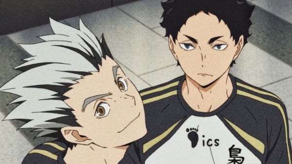

Bokuto Koutarou


Warning!
Parts of this article contain major spoilers. Continue at your own risk.
About Character
| Name | ||
|---|---|---|
| Name | : | Bokuto Koutarou |
| Kanji | : | 木兎 光太郎 |
| Character Info | ||
| Also Known | : | Airhead, Horned Owl Bastard, Owl with Frosted Tips, Mr. CoolestMcCool (by Kuroo) Bokkun (by Atsumu) Beam Weapon Simpleton Ace Horned Owl Head (by Kaori) Mr. Just-A-Normal-Ace (by Konoha) (manga only) |
| Gender | : | Male |
| Date of Birth | : | September 20, 1994 |
| Background Information | ||
| Family | : | Two Unamed Older Sisters |
| Likes | : | - Yakiniku |
| - Volleyball | ||
| Home town | : | Tokyo |
| Home country | : | Japan |
| Debut Information | ||
| In the Manga | : | Let's Go to Tokyo!! For Real!! |
| In the Anime | : | Center Ace |
Quotes :
"These last three years, I've been the team's ace - thanks to all you guys. But in a few days, I'm gonna have to say goodbye to you all. So it's about dang time I became the team's ace - period.”
(To Fukurōdani, Volume 37 Chapter 331)
"Nothing is impossible, just really improbable!"
(To Akaashi, Volume 38 Chapter 337)
"Think about what's fun, not what's easy."
(To Akaashi, Volume 38 Chapter 335)
"HEY HEY HEY"
Summary
Kōtarō Bokuto (Japanese: 木兎と 光太郎 / ぼくこうたろう Bokuto Kōtarō) was a third-year student at Fukurōdani Academy. He played on the volleyball team as the ace and captain. He was acknowledged as one of the top five aces in the country, barely missing the top three.
After high school, he became an outside hitter for the MSBY Black Jackals, a Division 1 team in Japan's V-League. He is also a member of the Japan National Volleyball Team.
Appereance
He has a playful, friendly, bombastic, and child-like personality and is described by his team as having "mood swings". Because of this, he is at times described as being 'simple minded'. His personality is very compatible that he gets along with many people similar to Hinata. Bokuto can at times be oblivious of other people's discomfort, seen with his interactions with Tsukishima. He also shows kind, just traits, leaning towards defensive during the 3-on-3 match during the summer training camp where Bokuto told Kuroo, Tsukishima, and Lev off for ganging up on Hinata when he was attempting to score. Bokuto often makes jokes about everything and acting rather dramatically about his plays, wanting attention or affirmation from his teammates.
Despite his general silly behavior, there are moments when Bokuto exhibits something akin to a wise form of intelligence, his words inspiring Tsukishima in Karasuno's game against Shiratorizawa, and helping to keep Yachi from over-worrying during the match against Nekoma. He has also been shown to have become a mentor figure toward Hinata and has given the younger teen numerous pieces of advice and showed him new tricks.
As the ace of a powerhouse school, Bokuto takes great pride in his position and is both admired and feared by his own team and opponents for his impressive skill and morale-boosting demeanor. However, Bokuto is well known to suffer mood swings that can affect his performance during games and can sometimes take a while or need something grand in order to return to peak form. When he makes a comeback from a slump, he clearly shows his pride as the ace and believes he is the "strongest". Bokuto eventually realizes that his weakness is not a trait that an ace should have and was able to rid himself of this fault which would lead him to start referring to himself as an 'ordinary' ace.
Bokuto also seems to never waver when dealing with "difficult" people like Atsumu post time-skip who immediately threatened Bokuto to never complain if he misses one of his sets, and instead of feeling afraid or down, just proceeded to confidently assure him that he is now a regular ace. He shows to be quite proud of himself for no longer suffering from his emotional instability and for being a player that others can rely on.
Background Story
Bokuto is shown to have been interested and participating in playing volleyball since his early childhood[1]. He is revealed to have been just as energetic during middle school which caused many of his teammates to at times take shortcuts and leave him alone during runs and not looking forward to being paired with him for drills.
When Bokuto was a first-year at Fukurōdani Academy, he had already gained a reputation for seeming to possess skills and power beyond his age but also having suffered from his mood swings at the same time. During his second year, he would meet Akaashi when he joined the volleyball team. Having learned that Akaashi is a setter, Bokuto quickly jumped at the chance to ask Akaashi to spiking practice with him where he would praise Akaashi's sets as the best he's ever been given.
He is stated to be one of the top five aces in the country, only barely missing being in the top three. He said he only got hooked onto volleyball recently when he finally learned to use straight shots when his cross shots were starting to become predictable to opponents.
Plot
Final Arc

Bokuto is currently playing on the Division 1 team the MSBY Black Jackals and is teammates with Atsumu, Sakusa, and Hinata. Upon the bus arriving at the Sendai gym, Bokuto eagerly awakes from his nap and hurries off. Entering the gym, Bokuto and Hinata quickly catch the smell of something delicious and notice the scent coming from Osamu's onigiri stand. Later when several of the Jackals and Adlers members have gathered together, Bokuto mistakes their conversation being of food and mentions wanting to get some of Osamu's onigiri before challenging Ushijima to an arm wrestling contest.
When the game is about to start and the starting members are being introduced, Bokuto takes the chance to do his own introduction by doing flips and cartwheels onto the court. Although he succeeds in gaining attention and making numerous people laugh, he is quickly scolded by Meian. This does deter Bokuto as he and Hinata are soon spotted excitedly preparing for the game to start. After Hinata was able to receive Kageyama's first serve and hear that he wished he had been able to stay on both feet, Bokuto expresses his surprise that Hinata was able to get the ball at all and compliment him for having been able to do so.
When Bokuto is up to serve, he begins clapping and manages to get most of the crowd to join in. Despite delivering a powerful serve, Hoshiumi was able to get the ball up. He soon comforts Hinata when his jump serve just missed landing in. Bokuto is soon able to get revenge on Hoshiumi when he makes the receive of his serve. However, he and Hinata would both miss trying to receive a spike by Romero. Like Hinata and Atsumu, Bokuto becomes envious of Kageyama when he received praise from Romero for a set he made. When the Jackals are leading 23-19, Romero makes a spike directly where Bokuto is. Because of his position and the speed of the spike, Bokuto is forced to make a chest receive[12]. He soon is able to win the first set for the Jackals by spiking a straight shot from Hinata's set.
In the middle of the second set, Bokuto accidentally hyper focuses and confuses himself on the current rally that causes him to hesitate and be late to try to block Hirugami. In the third set, Bokuto is once more able to get the Jackals in the lead with a sharp cross spike that Romero is unable to dig. After a minor flashback of Bokuto and Atsumu first becoming teammates and Bokuto stating that he is now just a simple ace, Bokuto attempts his famous straight shot when faced against triple block. Although the shot landed on the line, it was called as an out since the ball hit the antenna. He is quickly able to make up for this mistake when he hits a cross shot that lands in the vanguard; his fans proudly calling it the Bokuto Beam.
As Bokuto prepares for another serve, another flashback shows that Fukurōdani had advanced all the way to the final round of the Spring Tournament in 2013. They lost in the final set when Bokuto was blocked by Ichibayashi's blockers. At hearing Konoha taking the blame for the loss by saying that his set wasn't good enough, Bokuto insists the blame is no one's but his own; stating that it was his job as the ace to make each spike count. Konoha soon states that, even though Bokuto gave them plenty of trouble, he would continue to support his friend in the future. Back in the game, Hinata sends Bokuto a final hit but the ball was slightly short. While remembering the Ways of the Ace shirt that listed the rules of what every ace should follow, Bokuto makes a surprising turn in mid-air and does a backwards spike that gets past the Adlers blockers.
With the Jackals leading by three points, Bokuto is spotted attempting a block-out but is shocked when Hirugami and Romero get the better of him by lowering their arms as he spikes; resulting in his spike landing out. Not even upset at his spike going out, Bokuto compliments Hirugami on his skills. Near the end of the third set, Bokuto attempts to block Ushijima but was only able to get a deflection. He later greatly celebrates Hinata's accomplishment of receiving Ushijima's spike. When the Jackals eventually reach set and match point in the fourth set, Bokuto is able to win the match by getting a spike past Kageyama.
After the match, Bokuto is interviewed by Akaashi and Udai. Even though Akaashi praises Bokuto for how well he played during the game, Bokuto tries to get the former setter to see that he is an ordinary ace now; their conversation confusing Udai in the process. Afterwards, he is briefly seen reuniting with Kuroo and Daichi.
In 2021, Bokuto is part of the Japan Men's National Volleyball Team and is seen excitedly awaiting the match against Argentina.
Relationships
Fukurodani Academy
-
 Akaashi Keiji : Despite Akaashi being a year younger, the setter appears to be Bokuto's closest friend and the two can normally be seen around each other during games, practice, and outside of volleyball activities. Because of this, Akaashi is the one who knows Bokuto best and how to handle the ace when he gets into one of his slumps. While in a game, Bokuto and Akaashi make a powerful duo although Bokuto tends to seek praise from Akaashi whenever he carries out a good attack but usually receives minor feedback or something he just wants to hear. Much like when Akaashi looks out for him, Bokuto does the same for the setter if he ever appears to be down or unsure of himself. Even after high school, the two continue to remain in close contact.
-
 Fukurodani Academy :
While Bokuto normally tries to present himself as the confident 'big brother' of the team, he is actually more known for being the 'baby of the family'. Before growing out of his mood swings, Bokuto tended to rely on the team for support when he was off his game. However, when the team themselves seem to be down in spirits, Bokuto would do his best to cheer them up. Despite this, the team tends to run off when Bokuto requests help for spiking practice since he is well known for stretching the practices for as long as possible. Bokuto also appears to be close to Yukie, whom he tends to borrow notes from but tends to forget to return them to her.
Fukurodani Academy :
While Bokuto normally tries to present himself as the confident 'big brother' of the team, he is actually more known for being the 'baby of the family'. Before growing out of his mood swings, Bokuto tended to rely on the team for support when he was off his game. However, when the team themselves seem to be down in spirits, Bokuto would do his best to cheer them up. Despite this, the team tends to run off when Bokuto requests help for spiking practice since he is well known for stretching the practices for as long as possible. Bokuto also appears to be close to Yukie, whom he tends to borrow notes from but tends to forget to return them to her.
Karasuno High
-
 Hinata Shouyou :
During the summer training camp, Bokuto became acquainted with Hinata after the latter joined their free practice. Bokuto would teach Hinata a variety of different attacks and skills that the middle blocker would eagerly accept and use in many of his matches. Bokuto would happily accept all of the praise and admiration Hinata would give him for being one of the top five ace's in the nation but he also praises and supports Hinata for many things he does as well; such as performing the block-out during their 3-on-3 practices. Akaashi and Bokuto both claim Hinata is a disciple of Bokuto, and Akaashi knew Hinata's presence would help revive the ace during the match against Eiwa High School. In the Final Arc, the two are teammates on the MSBY Black Jackals and are shown to be as close as ever.
Hinata Shouyou :
During the summer training camp, Bokuto became acquainted with Hinata after the latter joined their free practice. Bokuto would teach Hinata a variety of different attacks and skills that the middle blocker would eagerly accept and use in many of his matches. Bokuto would happily accept all of the praise and admiration Hinata would give him for being one of the top five ace's in the nation but he also praises and supports Hinata for many things he does as well; such as performing the block-out during their 3-on-3 practices. Akaashi and Bokuto both claim Hinata is a disciple of Bokuto, and Akaashi knew Hinata's presence would help revive the ace during the match against Eiwa High School. In the Final Arc, the two are teammates on the MSBY Black Jackals and are shown to be as close as ever.
-
 Tsukishima Kei :
During the training camp, Bokuto became somewhat of an inspiring figure to Tsukishima when he helped the first-year middle blocker realize that he can have a better connection to volleyball when he has his special volleyball moment. During the practices, Bokuto developed a friendly relationship with Tsukishima and would begin addressing him as Tsukki; much to Tsukishima's displeasure. As Tsukishima's development continued, Bokuto continued to support the middle blocker and notices how much he's grown in skill.
Tsukishima Kei :
During the training camp, Bokuto became somewhat of an inspiring figure to Tsukishima when he helped the first-year middle blocker realize that he can have a better connection to volleyball when he has his special volleyball moment. During the practices, Bokuto developed a friendly relationship with Tsukishima and would begin addressing him as Tsukki; much to Tsukishima's displeasure. As Tsukishima's development continued, Bokuto continued to support the middle blocker and notices how much he's grown in skill.
Other School
-
 Kuroo Tetsurou :
Kuroo and Bokuto seem to be close friends, as they are often seen pestering other people together and seem to know each other quite well in terms of being both friends and opponents. They have also been observed to have similar reactions to certain events, such as when Tsukishima asked them a question. Bokuto usually does extra practices with Akaashi and Kuroo, despite the latter being from another team. While the two are generally on friendly terms, they tend to have small contests against each other, though most of them are trivial; during the BBQ, they fought to see who could grab the most amounts of meat. When it comes to matches, they become full-on rivals. However, during matches, they also compliment each other. For example when Kuroo said "As usual he fires up the entire gymnasium", or Bokuto says "Damn the demon cats and their godlike receives".
Kuroo Tetsurou :
Kuroo and Bokuto seem to be close friends, as they are often seen pestering other people together and seem to know each other quite well in terms of being both friends and opponents. They have also been observed to have similar reactions to certain events, such as when Tsukishima asked them a question. Bokuto usually does extra practices with Akaashi and Kuroo, despite the latter being from another team. While the two are generally on friendly terms, they tend to have small contests against each other, though most of them are trivial; during the BBQ, they fought to see who could grab the most amounts of meat. When it comes to matches, they become full-on rivals. However, during matches, they also compliment each other. For example when Kuroo said "As usual he fires up the entire gymnasium", or Bokuto says "Damn the demon cats and their godlike receives".
-
 Sakusa Kiyoomi :
Bokuto feels a sense of rivalry toward Sakusa due to the latter's status as one of the top three aces in the country, but it's unknown what Sakusa thinks of him in return. It's hinted that Itachiyama may have defeated Fukurōdani many times in the past with Sakusa on the team, so Bokuto intends on getting revenge. Sakusa either ignores Bokuto's shouts or doesn't hear him swear vengeance. Sakusa and Bokuto eventually become teammates on MSBY Black Jackals.
Sakusa Kiyoomi :
Bokuto feels a sense of rivalry toward Sakusa due to the latter's status as one of the top three aces in the country, but it's unknown what Sakusa thinks of him in return. It's hinted that Itachiyama may have defeated Fukurōdani many times in the past with Sakusa on the team, so Bokuto intends on getting revenge. Sakusa either ignores Bokuto's shouts or doesn't hear him swear vengeance. Sakusa and Bokuto eventually become teammates on MSBY Black Jackals.
Trivia
- Favorite Food: Yakiniku (Barbecued meat, usually beef)
- Pre-timeskip Concern: "...How do you spell 'concern'?"
- Post-timeskip Concern: He's not really sure about taxes and stuff.
- According to the Haikyuu store in Japan, Bokuto has smaller hands than Akaashi because the latter has long fingers.
- His worst subject is Mathematics.
- His birthday is three days before the Autumnal equinox within the Japanese calendar.
- His star sign is Virgo.
- He is the third oldest third-year on the team.
-
According to Akaashi, Bokuto has at least 37 weaknesses.
- He loves to show off.
- If he becomes too fixated on one thing, he'll completely forget how to do anything else.
- In his second year, at the Spring Tournament, he bought an unpopular t-shirt that reads: "The Wisdom of the Ace: Firstly, the figure of the ace is one that inspires his allies. Secondly, he should shatter any wall. Thirdly, he should hit any ball to his utmost ability." Unsurprisingly, he and Hinata find it cool.
- Akaashi states in the manga and English subbing that Bokuto just missed being one of the top three ace's, while in the English dub he says that Bokuto was once one of the top three but fell out for unknown reasons.
- In a flashback Tsukishima has of the training camp, Kuroo and Bokuto were shown to have switched hairstyles.
- Whenever he's in his 'emo mode', his hair deflates.
- He starred as himself in one of Ennoshita's roadshows called "The Day Armageddon Arrives on Earth".
- Despite being the captain, Bokuto wears #4 rather than the expected #1. This is most likely because Fukurōdani is the type of school where #4 is traditionally worn by the team's ace. His jersey in the manga and in the anime does have the mark that also signifies him as the team captain.
-
Nomenclature:
- Kōtarō (光太郎) - 光 (kō) refers to Light while 太郎 (tarō) is a very common masculine name. The character "太" in common usage means thick or big. The last character 郎 simply means Son.
- Bokuto (木兎) - Horned Owl
- The two can roughly translate to "Thick Owl."